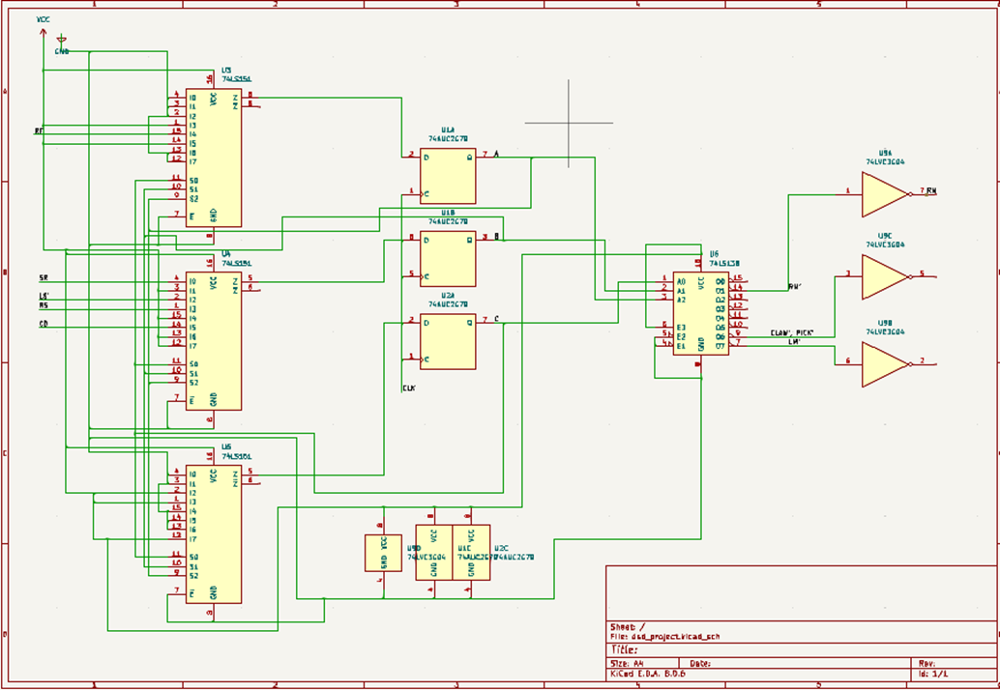

2025
Digital MIMO Controller for warehouse Automation Bot
Course ProjectApplying digital design first principles to come up with a solution for designing and implementing a custom digital MIMO controller for a line-follower warehouse automation bot that retrieves cargo based on RFID detection.
Read about Project ↗